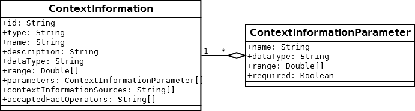

MOTIVATE Knowledge Ontology
Classes
- Classes represent abstract concepts of entities in the world which are characterized by properties.
Classes and their respective properties form the ontology's T-box.
Specific instances of those classes are called individuals, comprised in the ontology's A-box.Example:
A class "student" may have properties like "age", "school", "course", "fellows" and so on. One individual of this class might be "John Smith" with respective values: age=21, school=MIT, course=informatics, fellows={Peter, Paul, Mary}. - OWL covers the concept of inheritance, achieved by "SubClassOf". Aside from Subclasses, there can be Equivalents defined as a sort of relation between classes.
Furthermore, members of classes can be marked as Disjoints. That is, an instance of a disjoint set of (sub)classes can be of only one of these classes. - Anonymous classes can be defined via their properties. They serve as Superclasses or Equivalents to named classes (see for instance, "Action" or "SituationalContextInformation", respectively).
LearningUnit
- This class represents all existing units created for micro learning (so-called "nuggets").
- A learning unit usually has some metadata, like mediatype or difficulty. Thus, this class is a subclass of an anonymous class having a data property "hasMetaData" (see below).
- Learning units use to relate to one another. Those relations are defined by an object property "hasRelation" and its subproperties (see below).
- In order to accomplish context-sensitive adaptation, learning units are assigned some context information. Each learning unit can have one or more object properties (see below) "hasContextInformation".
- Each learning unit has exactly one logical operator which is either "AND" or "OR". This operator logically combines the attached pieces of context information, so that either all or at least one of these must hold in order to activate this learning unit.
LearningUnitClass
- Learning units can be classified by their metadata, e.g. the class of all learning units with video content. Classes of learning units are to be defined arbitrarily and may comprise more than one piece of metadata.
- Each instance of LearningUnitClass thus has a logical operator similar to that of LearningUnit (see above), only this one is applied to metadata instead of context information.
- Since one learning unit can belong to multiple classes, a fine-grained approach to defining those classes is recommended.
ContextInformation
- This class includes all kinds of pieces of information about a user's context.
An instance of this class is equivalent to one specific piece of context information, e.g. current temperature. - The definition of this class allows for a generic knowledge representation of context information: ContextInformation is any piece of information that belongs to some context class (see below) and has an ID, a value, an operator, and optional parameters. This definition is based on the following scheme:
- There are six subclasses, according to four well-known context classes (see below):
- TechnicalContextInformation
- PhysicalContextInformation
- having subclass LocationContextInformation
- PersonalContextInformation
- SituationalContextInformation
- having subclass ScenarioContextInformation, as well as:
- MixedContextInformation for context information belonging to more than one of these and
- ParameterizedContextInformation as described in the following paragraph.
- The ontology further encompasses the concept of actions performed by the user, such as completing or canceling a learning unit. Actions are considered yet another type of, typically parameterized, context information.
ContextInformationParameter
- Context information often needs more than a single key-value-pair for its representation.
Examples include different measuring units, like degree Celsius or Fahrenheit. - A context information parameter consists of ID and value. One instance of ContextInformation may have one or more parameters. It is then classified as ParameterizedContextInformation.
ContextClass
- As mentioned above, context information is assigned one or more of these four main classes:
- TechnicalContext: all information concerning the user's mobile device, Wifi, and so on.
- PhysicalContext: all information regarding the user's physical environment.
- LocationContext is a subclass containing location-specific information.
- PersonalContext: all about the user himself, like his learning style, motivation, peers, and so on.
- SituationalContext: all situation-specific, time-dependent information like role, activity, task.
- ScenarioContextInformation is a subclass dedicated to the learner's current scenario.
Constraint
- Constraints are more general restrictions or regulations, i.e. not limited to effect single learning units. Constraints may be applied to classes of learning units, features or the entire application. An example is the general restriction of audio playback in noisy surroundings.
- There are two subclasses:
- LearningUnitClassConstraint applied to one or all but one class of learning units (see above).
- RestrictFeatureConstraint applied to one feature of the application.
- As implied in the above example, certain requirements (e.g. noisiness) must be met for a constraint to take effect. One constraint may have several requirements which are again linked in conjunction or disjunction by a logical operator.
ConstraintRequirement
- There are at this time two subclasses:
- ContextInformationConstraintRequirement ought to have one ContextInformation.
- RankingConstraintRequirement is defined as having one value which is either "HIGH" or "LOW".
Properties
- Classes and their individuals, respectively, are each characterized by properties which are subdivided into object properties and data properties.
- Both can inherit from properties of their respective type by "SubPropertyOf" (similar to class inheritance, see above).
- Every property can be assigned a Domain and Range, the former of which is always a class of individuals. That is, of course, because all properties serve to describe these classes.
- Properties are named after the convention: "hasSomething" or "isSomethingOf", for the respective inverse.
- As mentioned above, properties can be used to define anonymous classes. For this purpose, among others, there are three quantifiers for specifying range and cardinality:
- some: at least one, e.g. "hasMetaData some Literal" means a class has at least one Literal as metadata.
- only: exclusively, e.g. "hasValue only integer [<"11"]" means a class has some value of type integer which must be less than "11".
- exactly: well, exactly, e.g. "hasLogicalOperator exactly 1 Literal" means a class has exactly 1 Literal as logical operator - no more, no less, nothing else.
Object Properties
- Object properties represent connections, i.e. relations between concepts, i.e. classes and their individuals.
They may be regarded as edges in a graph whose nodes represent these objects.
Object properties connect learning units and context information, context information and context classes, constraints and constraint requirements, and so on. - "hasRelation" as one of the more important object properties enables links between learning units. This property has seven subproperties (of which each has an inverse) specifying the type of link.
- Object properties can be defined as (a combination of) functional, inverse functional, transitive, symmetric or asymmetric, reflexive or irreflexive.
- As already mentioned, object properties (in contrast to data properties) can have inverse object properties: A hasProperty B <=> B isPropertyOf A.
- Domain and Range of object properties do not have to be specified in the T-box. In most cases this is not done until the creation of the A-box, in order to prevent the reasoner from making unexpected inferences.
Data Properties
- Data properties, as opposed to object properties, do not reference URIs of other objects when applied to individuals. Instead, they take on specific values of predefined data types like integer, float, string, language, date, Literal, etc.
- These data types may be complemented by specifying individual ranges, e.g. "hasLogicalOperator" only {"AND", "OR"}.
This possibility has been exploited for defining anonymous classes (see above, 1. and 2.). - Data properties can be defined as functional, i.e. having at most one value per argument.
- "hasMetaData" is one of the more important data properties, allowing for learning units to be classified (see 1.2 above). All available metadata (18 at this time) are defined as subproperties of this data property.
Annotation Properties
- This additional type of property is irrelevant to the reasoner. It can be used to make the ontology more comprehensible or to add extra information about the ontology itself. Currently, there is only one annotation property in use ("versionInfo").
Individuals
- As mentioned at the beginning, individuals form the ontology's A-box, representing specific, real instances of the more abstract classes formally defined within the T-box, exhibiting all of the properties defined therein.
- There are three individuals already existent in the ontology: AppUsageFeature, LocationTrackingFeature, and SuggestAlternativeFeature.
These are defined as disjoint equivalents to the class Feature (see 1. above), meaning a feature is supposed to be either an app usage, a location tracking, or an alternative suggesting feature.